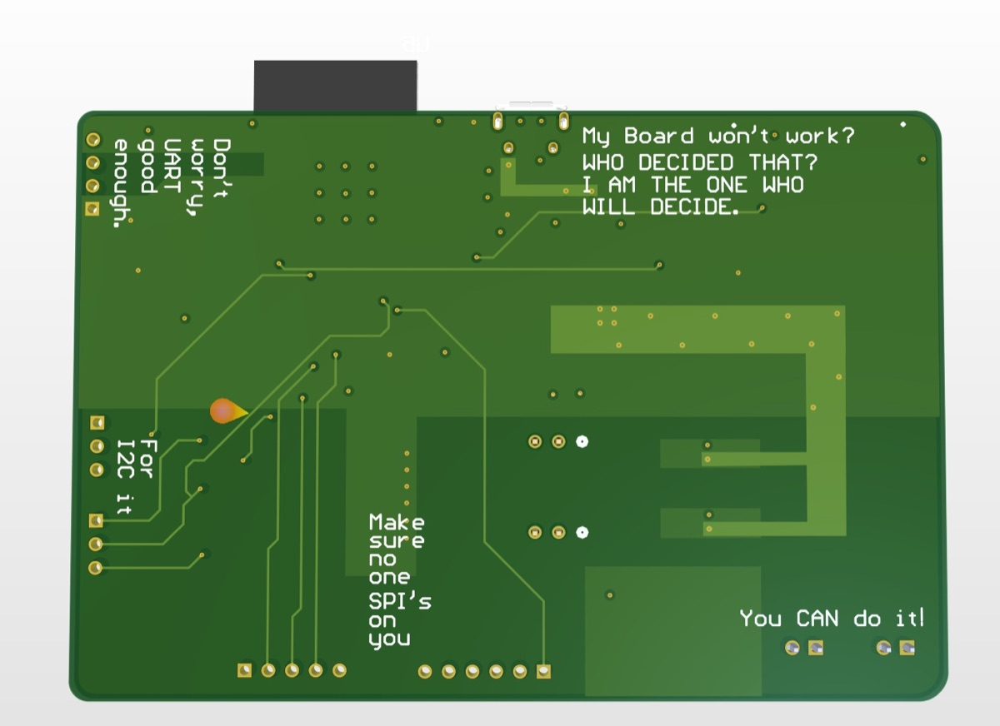
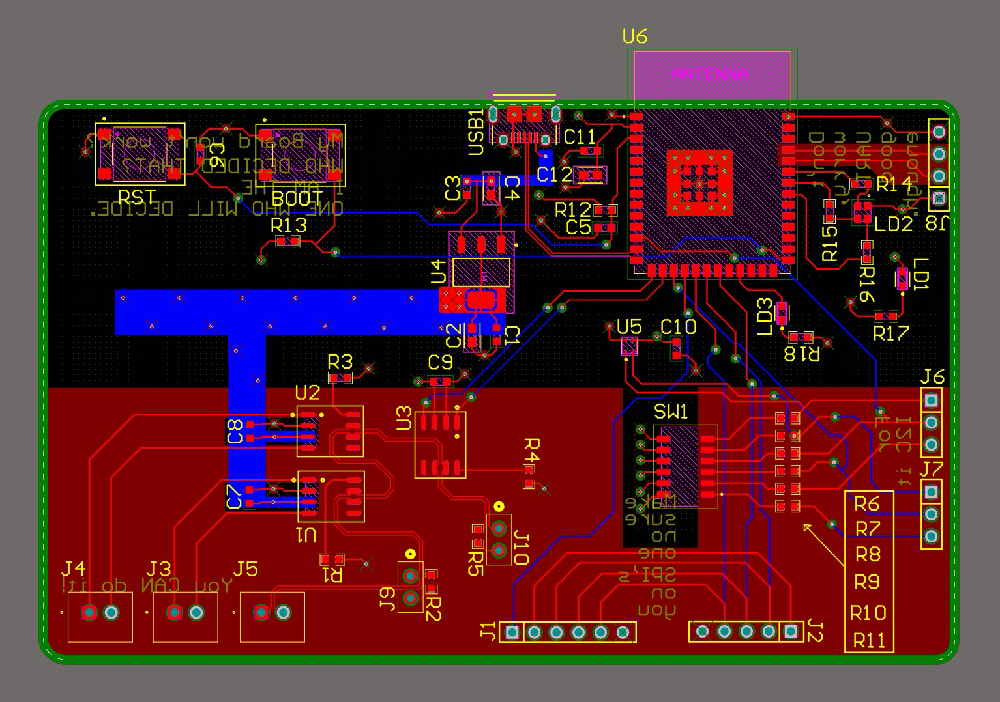
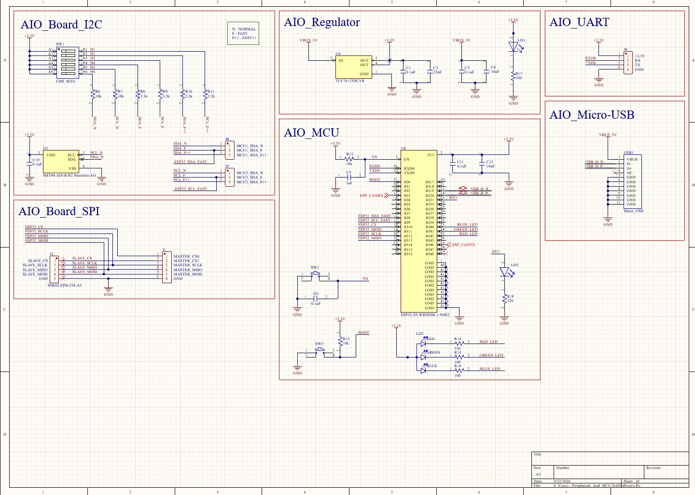
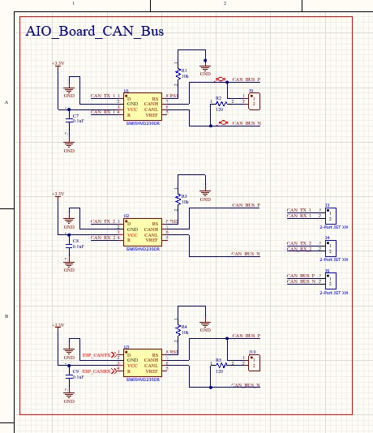

Power
I standardized the board on 3.3 V logic and stepped a 5 V input down to 3.3 V.
I designed a reusable ESP32-S3 board to make CAN, SPI, I²C, and UART interface testing more repeatable before integrating those links into larger systems.

When I was debugging microcontroller communications, wiring and hardware setup could obscure whether a problem was in the peripheral, the firmware, or the test connection.
I conceived this board as a reusable test platform for CAN, SPI, I²C, and UART instead of rebuilding a different setup for each interface.
The design centers on an ESP32-S3, six external connection ports, and three CAN transceivers. It uses standardized 3.3 V logic, with a 5 V input stepped down to 3.3 V, and a four-layer SIG–GND–PWR–SIG stack.
I independently conceived and designed the schematic and PCB, programmed the ESP32 test peripherals, and performed the reported interface-port tests.
I standardized the board on 3.3 V logic and stepped a 5 V input down to 3.3 V.
I selected the ESP32 in part to support a Wi-Fi-connected laptop test workflow.
A four-layer stack was sufficient for a small, practical, reusable board.

JLCPCB manufactured the board. I received populated/assembled and blank boards, then brought the design up and programmed the ESP32 peripherals for the test workflow.
I used an STM32F413 Nucleo with a 16 MHz external oscillator and an ESP32-C6 endpoint. A laptop connected through the board’s “AIO Test” Wi-Fi interface. I tested CAN first, then exercised I²C, SPI, and UART through their respective pins and software sections.
A reusable test fixture needs observability as well as interface coverage. After using the board, I added direct exposed CAN-bus access and another onboard LED.
The board progressed from concept through design, fabrication/assembly, bring-up, power testing, and port testing. Future ideas include a smaller form factor, more oscillator flexibility, RS-232 support, and modular CANopen-oriented features.


